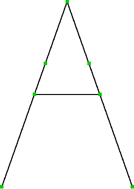

Pourquoi le parallélogramme de Peaucellier ?
Précédent
En 1874,
Harry Hart
invente un système similaire,
encore plus performant et compact
, puisqu’il ne nécessite plus que cinq barres.
Féliciations ! Vous avez atteint la fin de cette animation. Retour à l'accueil

Schéma du dispositif inventé par Hart